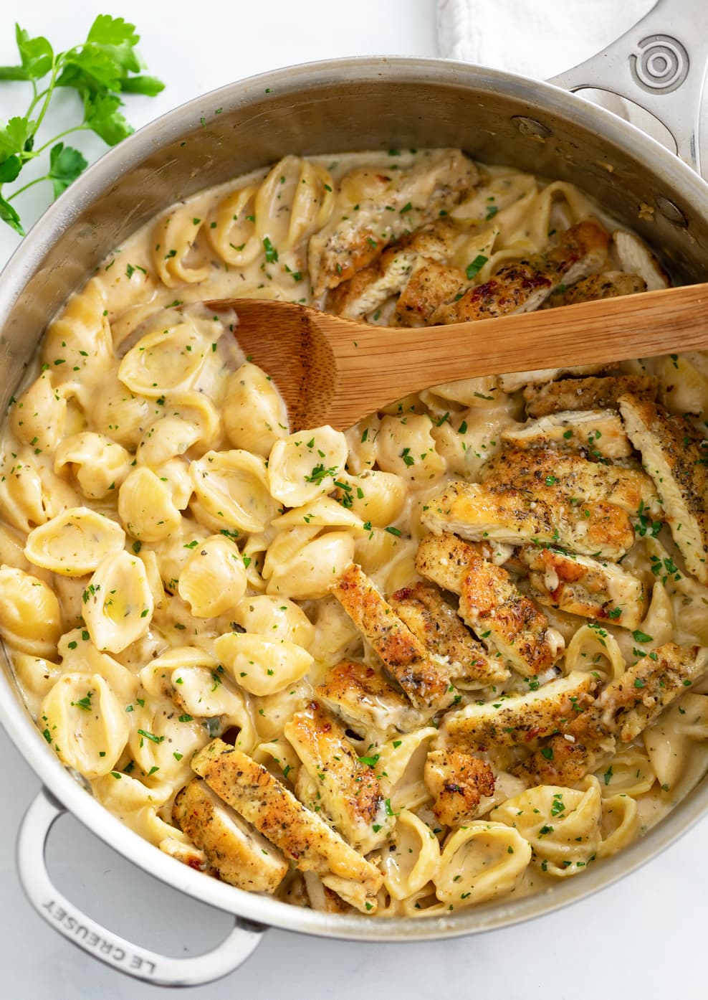

Creamy Chicken Pasta

Description
Lemon Chicken Pasta is an easy 30-minute dinner. This chicken pasta tastes like a restaurant quality meal and the lemon cream sauce will win you over.
Ingredients
Chicken Pasta Ingredients
- 1 egg
- 1 Tbsp milk
- 1 cup panko bread crumbs
- 1/2 tsp salt, plus more to salt the water
- 1/8 tsp black pepper
- 2 Tbsp olive oil
Lemon Cream Sauce
- 4 Tbsp fresh lemon juice
- 2 Tbsp unsalted butter
- 2 garlic cloves, minced
- 1/4 tsp onion powder
- 2 cups heavy whipping cream
- 1/2 tsp salt
- 1/3 cup parmesan cheese
- 1 Tbsp parsley, optional garnish
Steps
Cook pasta:
- Bring a large pot of water to boil,
add 1 heaping Tbsp salt and pasta.
Cook until al-dente according to package
instructions or to your desired doneness.
Reserve 1/2 cup pasta water then drain lightly
rinse (rinsing will keep the sauce creamier)
Make Lemon Chicken:
-
While pasta is cooking, set up 2 bowls. In first bowl, beat
together 1 egg and 1 Tbsp milk. In second bowl, combine
1 cup bread crumbs, 1/2 tsp salt and 1/8 tsp black peper. Dip each
chicken cutlet in egg wash, letting excess drip back into the bowl, then dip bread crumbs, turning to coat.
-
Heat a large skillet over medium heat. Add 2 Tbsp oil, or enough to lightly cover the bottom of the pan and sautee breaded chicken in a single layer for 3-4 minutes per side or until cooked through with an internal temperature of 165˚F. Transfer to cutting board to cool slightly, squeeze half of the lemon juice over the top then cut into strips.
- Sprinkle the top with 1/3 cup parmesan cheese and remove from heat, whisking until cheese is melted and incorporated. Season to taste with salt (I added a pinch of salt).
- Pour sauce over rinsed, drained pasta and toss to coat noodles. Add reserved pasta cooking water to thin the sauce if desired. Garnish with parsley and serve with strips of chicken over warm bowls filled with pasta.